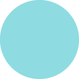
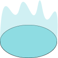
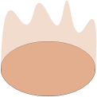

MGM C4 M1The Goal: DepthThe Goal of Mechanics Design: DepthModule home →
Mechanic or aesthetic?Part 1 · slide 18
Mechanics X-RayPart 1 · slides 20 to 33, 49 to 54, 99 to 100
The Guarded DoorPart 2 · slides 58 to 63, 73 to 74, 83 to 90
Type Weakness X-RayPart 4 · slides 104 to 107

Resource PoolPart 6 · slides 198 to 216, 219, 257 Destruction Warlock & Chaotic EnergyPart 6 · slides 224, 256 Time as a ResourcePart 6 · slides 225 to 256 Life Tap Solo vs RaidPart 6 · slides 226 to 228 The Life Tap TradePart 6 · slides 230 to 231
Switch, Plate, PulleyPart 3 · slides 79 to 94

Danger Zone or Safe RunePart 4 · slides 110 to 113 Reverse Sequencing MapPart 4 · slides 115 to 119 Contrapositive ArenaPart 4 · slides 132 to 134 Lifesteal vs Life per HitPart 5 · slides 177 to 180 Diminishing ReturnsPart 5 · slides 183 to 186 MGM C4 M4PvP InteractionsFundamentals for Designing Engaging PvP InteractionsModule home →
MGM C4 M4PvP InteractionsFundamentals for Designing Engaging PvP InteractionsModule home →


 MGM C4 M5PvE InteractionsFundamentals for Designing Engaging PvE InteractionsModule home →
MGM C4 M5PvE InteractionsFundamentals for Designing Engaging PvE InteractionsModule home →
 MGM C3 M6Co-op InteractionsEngaging Co-op Interaction Design FundamentalsModule home →
MGM C3 M6Co-op InteractionsEngaging Co-op Interaction Design FundamentalsModule home →
Interaction CountPart 1 · slide 9
Shared-Screen Camera LabPart 4 · slides 68 to 78
Teamplay Targeting MatrixPart 5-6 · slides 116 to 133, 161 to 171
Before, During, After the HitPart 7 · slides 147 to 160
Co-op Chain BuilderPart 8 · slides 186 to 229, 288 to 291
Cross-Class StructurePart 9 · slides 246 to 255
Keywords Need SituationsPart 10 · slides 270 to 285
Free Gear PlateauPart 11 · slides 316 and 317
Why Depth at ScalePart 1 · slides 5 to 9
What Is CompositionPart 2 · slides 20 to 45
Purpose, Payload, PackagingPart 3 · slides 56 to 65
Ability ForgePart 4 · slides 77 to 105
Refining the AbilitiesPart 5 · slides 109 to 141
 Enemy ArchetypesPart 6 · slides 142 to 188
Composition Across SystemsPart 7 · slides 189 to 227
Combining FrameworksPart 8 · slides 228 to 260
What’s NextPart 9 · slides 261 to 275
Enemy ArchetypesPart 6 · slides 142 to 188
Composition Across SystemsPart 7 · slides 189 to 227
Combining FrameworksPart 8 · slides 228 to 260
What’s NextPart 9 · slides 261 to 275
Enemy ArchetypesPart 6 · slides 142 to 188
Composition Across SystemsPart 7 · slides 189 to 227
Combining FrameworksPart 8 · slides 228 to 260
What’s NextPart 9 · slides 261 to 275